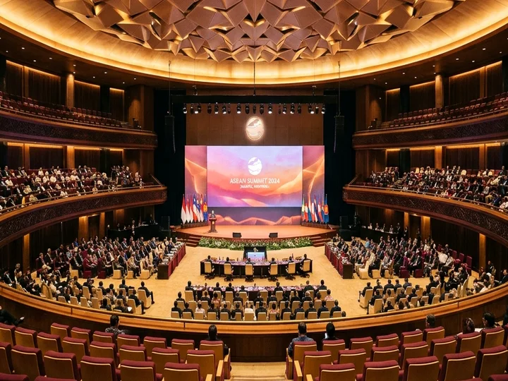

In-House Culinary
Gastronomi Bintang Lima
Dapur eksekutif bersertifikasi HACCP & Halal yang dipimpin oleh tim Executive Chef internasional—siap menyajikan jamuan fine dining untuk 2.500 tamu maupun buffet 10.000 delegasi.
Standar Katering JCC ↗Dari KTT kenegaraan yang bersejarah dan pameran industri global hingga perayaan pernikahan agung—kami menyatukan perencanaan matang, detail arsitektur yang elegan, dan kuliner bintang lima untuk menciptakan momen yang tak terlupakan.
Dari perhelatan diplomatik yang intim hingga eksibisi akbar lintas benua, kami memadukan kurasi tata ruang, keahlian teknis panggung, dan keramahtamahan khas Nusantara di jantung kawasan Senayan.

Arsitektur & Kapasitas
Setiap ruang dirancang memiliki karakter visual, tinggi plafon, dan fleksibilitas partisi yang berbeda—memungkinkan satu acara mengalir mulus dari sesi pleno ke jamuan malam.
Buka Matriks Perbandingan Ruang ↗
Auditorium bundar ikonik tanpa pilar penghalang dengan balkon mezzanine 360°, tata cahaya panggung teatrikal, dan bilik interpretasi simultan 8 bahasa.

Ballroom megah dengan lampu gantung kontemporer dan ukiran kayu Nusantara. Dapat dibagi menjadi 3 ruang terpisah untuk 2.500 tamu jamuan duduk atau 4.500 tamu resepsi.
Serambi marmer megah berlapis cahaya alami yang menghubungkan Plenary Hall, Assembly Hall, dan Exhibition Hall.

Ruang serbaguna fleksibel dengan sistem partisi kedap suara, mikrofon konferensi digital, dan kapasitas hingga 2.000 kursi teater.

Hall eksibisi bebas kolom dengan tinggi plafon 9 meter, kapasitas beban lantai 1.500 kg/m², dan akses masuk truk kontainer langsung ke dalam hall.
Kurasi Pengalaman
Pilih skenario acara di bawah ini untuk meninjau kombinasi ruang, konfigurasi tata letak, dan suasana visual yang paling sesuai dengan agenda Anda.
Protokol Kenegaraan & Kongres
Sejak KTT Non-Blok 1992 hingga ASEAN Summit, JCC menyediakan jalur kedatangan kepala negara yang terpisah, ruang tahan-sadap, pusat media berkecepatan tinggi, dan konektivitas bawah tanah langsung ke Hotel Sultan.
Layanan Terpadu
In-House Culinary
Dapur eksekutif bersertifikasi HACCP & Halal yang dipimpin oleh tim Executive Chef internasional—siap menyajikan jamuan fine dining untuk 2.500 tamu maupun buffet 10.000 delegasi.
Standar Katering JCC ↗
Produksi & Teknis
Titik gantung (rigging points) berkapasitas tinggi, sistem tata suara line-array, pencahayaan panggung terprogram, serta jaringan serat optik dedikasi di setiap hall.
Unduh Spesifikasi Teknis ↗Logistik & Akses VIP
Truk logistik dapat masuk langsung ke lantai Exhibition Hall A & B untuk efisiensi bongkar-muat, sementara tamu kehormatan menikmati akses privat dan ruang tunggu VIP.
Panduan Akses & Parkir ↗Untuk Penyelenggara & Perencana Acara
Bandingkan kapasitas antar-ruang secara berdampingan, tinjau denah konsep, dan buat draf brief acara instan untuk didiskusikan bersama tim spesialis venue JCC.